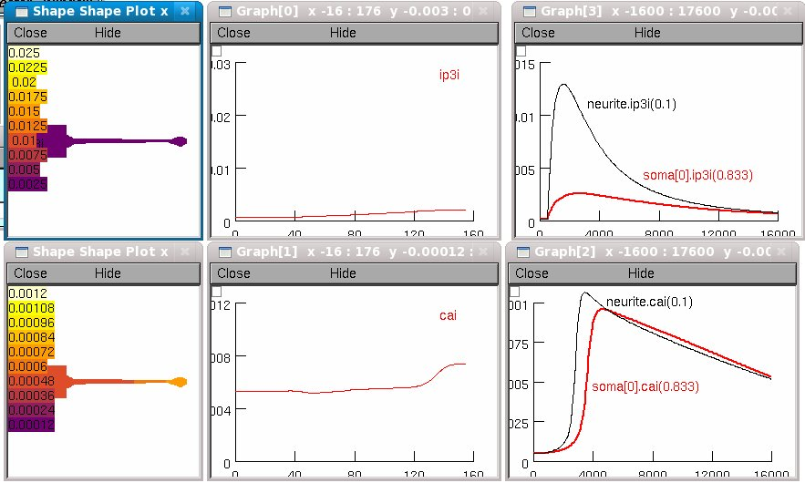

===========
Description
===========
NEURON implementation of the Virtual Cell model (NE_Full_best) that
was used for the first column of results in Fig. 7 of
An image-based model of calcium waves in differentiated neuroblastoma
cells. Fink, C. C., B. Slepchenko, I. I. Moraru, J. Watras,
J. Schaff, and L. M. Loew. Biophys. J. 2000 79:163-183.2000.
The Virtual Cell models described in Fink et al. 2000 are available at
http://vcell.org/vcell_models/access_models/fink.html Questions about
them should be addressed to the authors of that paper. For questions
about this NEURON implementation, contact ted dot carnevale at yale
dot edu
=====
Usage
=====
To launch a simulation, first make sure that the mod files have been
compiled (see the FAQ list at www.neuron.yale.edu for help), then
click on "Init & Run" in the "RunControl" panel.
The "bkr (Globals)" panel controls del_bkr the time at which
bradykinin is applied and k_bkr the time constant of the
monoexponential decay of bradykinin
If you want to slow the simulation, increase "Seconds per step" in the
"Movie Run" panel to 0.1 s or more, then click on the "Init & Run"
button in the "Movie Run" panel. After the simulation finishes you
should see graphs similar to Fig. 7:

The "shape plots" and "space plots" show intracellular Ca and IP3
plotted along the entire length of the cell.
The time axis graphs show these variables near the "distal" end of the
soma and near the proximal end of the long neurite.
====================
Implementation notes
====================
There are three reasons why this implementation's simulation results
cannot be exactly identical to those shown in Fig. 7 of Fink et
al. 2000.
1. The morphometric data for this NEURON implementation were obtained
by measurements taken from an idraw tracing of the cell image.
2. Because of differences between the approaches used by NEURON and
Virtual Cell to represent geometry and to deal with spatial
discretization, the distribution of spatially inhomogeneous variables
in this NEURON implementation is a qualitative approximation of the
distribution specified in NE_Full_best_
3. Unlike the Virtual Cell implementaton, the NEURON implementation
does not specifically represent the nucleus. Instead, the voume
occupied by the nucleus is assumed to have the same properties as
ordinary cytoplasm. This has negligible effect on simulations
because the volume of the nucleus in this cell, estimated from
figures in the paper, is probably less than (1/3.5)^3 ~ 1/40 the
volume of the entire soma. Fink et al., however, reduced their
3D conceptual model to a 2D computational model in Virtual Cell
for the sake of increased simulation speed. But this exaggerated
the size of the nucleus compartment--which has no SER, hence no
Ca stores--relative to the size of the soma by a factor of about
3.5 (i.e. the nucleus compartment became about 1/12 the size of
the soma compartment). On pp. 177-178, they remark that this
depressed the somatic Ca signal in their simulations.
Finally, there is also a cosmetic difference: this implementation uses
a "thermal" color map rather than the "rainbow" color map used in the
paper.
---------------
Parameter names
---------------
The Virtual Cell and NEURON implementations of the model described in
Fink et al. 2000 use different names for many of the variables and
parameters described in the paper. Below is a list of the names from
Tables 2-4 of Fink et al. 2000, with the corresponding names from the
Virtual Cell (NE_Full_best) and NEURON implementations.
Comments:
1. Tables 2-4 make full use of subscripts and the occasional greek
letter. In column 1 of the following table, subscripts are indicated
by underscores _ (J0 is shown as J_0), and greek letters
are spelled out (e.g. gamma).
2. The NEURON implementation used this naming strategy:
a. try to stay close to the names used in the paper
b. avoid the underscore _ character
c. use lower case for STATE and ASSIGNED variables
d. avoid conflicts between user-assigned and
automatically-generated names (e.g. for each STATE foo on the
LHS of an ODE or reaction, there is an automatically-generated
derivative variable called Dfoo)
3. The parameter values and units shown here are those used in the
NEURON implementation. They are taken from NE_Full_best, and scale
factors have been applied as needed for units consistency.
Tables 2-4 NE_Full_best NEURON value mechanism
---------------------------------------------------------------
J_0 J0 jbar 20.86 (uM um/s) bkr
k_0 k0 k 1.188e-3 (/ms) "
k_degr k_degr kdegr 0.14e-3 (/ms) ip3cum
[IP_3]_0 I_init ip3i0 0.16e-3 (mM) "
D_IP_3 D1 DIP3 0.283 (um2/ms) "
J_max Jmax jmax 3.5e-3 (mM/ms) cdp
V_max Vmax vmax 3.75e-6 (mM/ms) "
L L * (mM/ms) "
K_act dact Kact 0.3e-3 (mM) "
K_inh dinh Kinh 0.2e-3 (mM) "
k_on k kon 2.7 (/mM-ms) "
K_IP_3 dI Kip3 0.8e-3 (mM) "
K_P kP Kp 0.27e-3 (mM) "
[Ca]_0 C_init cai0 5e-5 (mM) "
[Ca]_ER C_ER caer 0.4 (mM) "
gamma_0 PLASMA_RATE gamma 8 (um/s) "
[Ca]_c Cp cath 2e-4 (mM) "
D_Ca D2 DCa 0.22 (um2/ms) "
B_1 B1_tot TBufs 0.45 (mM) "
K_1 K1 KDs 10 (uM) "
B_2 B2_tot TBufm 0.075 (mM) "
K_2 K2 KDm 0.24 (uM) "
D_buffer D3 DBufm 0.05 (um2/ms) "
*--the value of L is adjusted at initializaton so that net Ca flux
between SER and cytoplasm is 0 at rest.